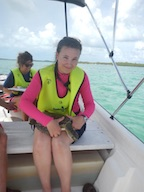

About Me

I am a native Texan, a violinist, and a librarian. I have not worked in a traditional library for many years, but prefer to take a very expansive definition of "librarian" and hence, still consider myself to be one. I am excited to be pushing the boundaries of the role even further by adding web development skills to the mix.
I have lived in Austin long enough to become one of those people who reminisces about how it used to be; e.g., I remember when 26th Street was still 26th Street and Dean Keaton/Keeton the name of a character in The Usual Suspects.
I like to travel, but love coming home to the Hill Country!